Chapter 1 꼭 알아야 할 여덟가지
1.1 자료의 분류
- 크게 범주형 자료와 연속형 자료로 구분 가능
<자료의 유형>
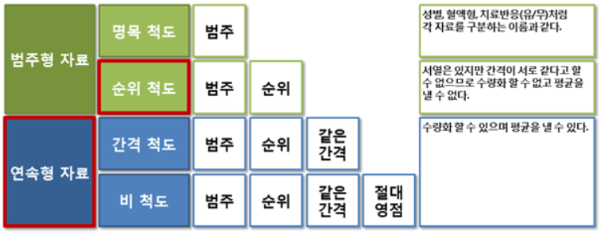
- 순위 척도를 연속형 자료로 혼동하지 않도록 주의해야함
- ex) 위암을 1, 2, 3, 4기로 구분했다고 연속형 자료로 처리하면 안됨
- ex) 위암을 1, 2, 3, 4기로 구분했다고 연속형 자료로 처리하면 안됨
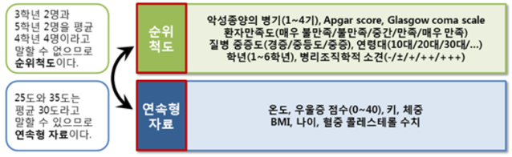
- 자료의 성격은 변할 수 있음
- 나이는 연속형 자료(비 척도)이지만, 10대/20대/30대로 구분하면 순위 척도가 되고, 미성년과 성년으로 구분하면 명목 척도가 됨. 이러한 변수의 변형에 익숙해질 필요가 있음
<나이에 따른 수축기 혈압 변화> 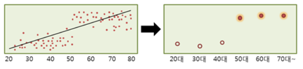
나이를 연속형 자료로 사용한 경우 - 연령의 증가에 수축기 혈압이 증가한다는 결론은 20~50세까지 큰 차이가 없는 현상을 제대로 반영하지 못함
나이를 순위척도로 전환한 경우 - 50대, 60대, 70대 이상에서 20대에 비해 수축기 혈압이 높다는 결론
1.2 가설을 검정하는 방법
보건의학 연구는 ’다른 상황을 생각하게 하는 현저한 근거가 없는 한 현상적인 모든 차이는 0이다’라는 명제에서 시작
가설설정: 분석하고자 하는 목적에 따라 귀무가설 및 대립가설을 설정
귀무가설(Null hypothesis): 일반적으로 널리 알려진 사실 혹은 Zero Base 혹은 연구자가 증명하고자 하는 실험가설과 반대되는 가설
- Ex) 메틸페니데이트 복용으로 인해 심근경색이 발생하지 않는다.
대립가설(Alternative hypothesis): 연구자가 검증하고자 하는 가설
- Ex) 메틸페니데이트 복용으로 인해 심근경색이 발생할 수 있다.
통계분석 결과 \(p < 0.05\) 의미: \(p-value\)는 귀무가설을 지지하는 정도를 의미하며, \(p < 0.05\) 의미는 귀무가설이 옳다 할지라도 임상시험의 결과가 귀무가설을 지지할 가능성은 5% 미만
따라서 귀무가설 전제로는 이런 현상을 설명하기 어렵고 귀무가설이 거짓일 가능성이 높으므로 귀무가설을 기각하고 대립가설을 채택하게 됨
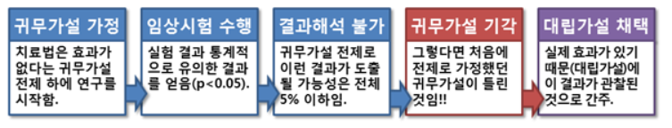
- 치료법 A와 치료법 B에서 두 치료법의 효과가 동등함을 증명하고자 함 (동등성 검정).
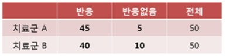
교차분석을 시행하면 \(p-value= 0.161\) \(\rightarrow\) ’두 치료법의 효과의 차이가 없다’는 귀무가설을 기각하지 못함
하지만, ’두 치료법은 효과의 차이가 없다’고 결론 내리기 어려움. 귀무가설을 기각하지 못했다고 하여 귀무가설의 옳음이 입증되는 것은 아님
동등성을 검정하고자 할 때는, ’두 치료법은 효과의 차이가 있다＇는 귀무가설을 세우고 이 귀무가설이 기각되어야 ’효과의 차이가 없다＇는 대립가설 채택을 채택할 수 있음
1.3 5% 유의수준과 다중비교
제1종 오류 \((\alpha)\)
- 귀무가설이 참인데도 가설검정의 결과가 귀무가설을 기각하는 오류
- 실제 효과가 없는데 실험결과, 효과가 있다고 나오는 오류 (false positive)
- 보통 5% 미만으로 통제함
- \(p < 0.05\): 실제로는 효과가 없는데 효과가 있다고 잘못 결론 낼 확률이 5% 미만이라는 뜻
- 5% 유의수준: 제 1종 오류를 범할 가능성을 5% 미만으로 제한한다는 의미
제2종 오류 \((\beta)\)
- 귀무가설이 참이 아닌데도 가설검정의 결과가 귀무가설을 채택하는 오류
- 실제로는 효과가 있는데도 실험결과, 효과를 증명하지 못하는 오류(false negative)
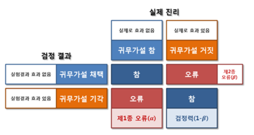
검정력 \((1-\beta)\)
- 귀무가설이 참이 아닌 경우, 가설검정의 결과가 귀무가설을 기각할 능력의 정도
- 실제로 효과가 있는 것을 통계 분석을 통해 효과가 있다고 증명할 수 있는 힘
- 제 1종 오류를 5% 미만으로 유지하면서 검정력을 최대화하는 통계 기법을 사용하고자 함
- 보편적으로 1-β는 0.8 또는 0.9로 설정하여 가설검정 수행
검정력에 영향을 미치는 요인
- 표본크기: 표본의 크기가 클수록 검정력은 증가함
- 두 모집단 간의 차이: 이 차이가 클수록 검정력은 커짐
- 표준편차: 표준편차가 작아지면 검정력은 커짐
- 유의수준(제 1종 오류)가 커지면 검정력은 커짐
- 검정력이 높으면 좋지만 이를 위해서는 표본크기가 늘어나게 되므로 임상시험의 경우 시간과 비용의 한계가 나타나게 됨. 따라서 적절한 통계적 표본크기를 결정하는 것이 중요
다중비교의 문제: Case 1
- 세 가지 치료법(A, B, C)의 치료효과를 비교하는 실험
- 한 번의 실험으로 A군과 B군, B군과 C군, C군과 A군 사이에 차이가 있는지 유의수준 5%로 세 가지 검정을 시도하여 A군과 B군 사이에서만 \(p < 0.05\)의 결과를 얻은 경우
\(\rightarrow\) A군과 B군이 통계적으로 유의한 차이를 보였다고 말할 수 없음
∵ 5% 유의수준이 3번 사용되므로, 각각이 독립인 경우, 1-(1-0.05)3 ≒ 0.143 의 유의수준
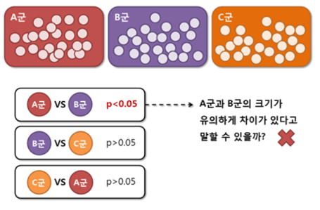
다중비교의 문제: Case 2
- 하나의 실험결과로 총 20개의 가설을 세워 각각 유의수준 5%로 검정하는 경우
- 이 경우, 20개 모두 효과가 없음에도 적어도 하나는 효과가 있다는 결론을 낼 위험이 5%보다 높아지게 됨.
\(\rightarrow\) 이를 다중비교의 문제(multiple comparison problem)이라고 함
∴ 가설을 검정할 때는 전체 유의수준이 지정된 5%를 넘지 않도록 주의해야 함
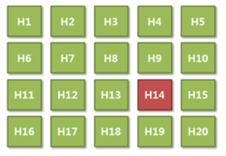
- 세 군을 비교하기 위해서는 첫 번째 단계로 세 군의 크기가 모두 같은지 검정
- 다음 단계로, 어떤 군 사이에 차이가 있는지 밝혀냄 \(\rightarrow\) 사후분석(post hoc analysis)
- 사후분석에서는 A군과 B군, B군과 C군, C군과 A군으로 3번의 검정 수행 (전체 유의수준 5%)
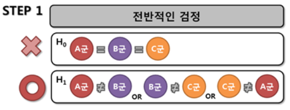
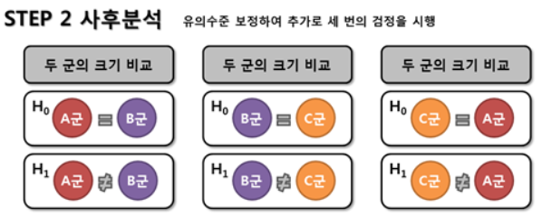
- 여러 가설을 동시에 검정하는 방법은 Bonferroni, Tukey, Duncan, Scheffe 등에 의해 여러 방법이 고안되어 있음
1.4 자유도
자유도 (degree of freedom): 실질적으로 독립인 값들의 개수
평균이 정해져 있다면 자료의 개수가 n인 경우 자유도는 n-1
∵ 평균이 정해진 10개의 자료 중에서 9개의 값은 아무 값이나 자유롭게 취할 수 있지만, 평균이 정해져 있다면 마지막 남은 1개의 값은 다른 값들에 의해 정의되므로 자유도는 9가 됨
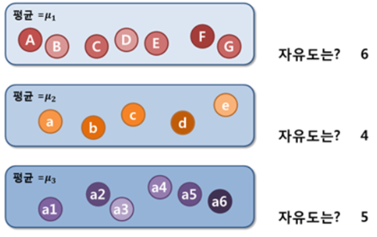
교차표에서의 자유도: 주변합이 모두 정해져 있을 때, n by m 교차표는 (n-1) * (m-1)의 자유도를 가짐
Ex1) 100명의 환자를 대상으로 당뇨와 고혈압 유무를 각각 조사한 결과 주변합이 모두 정해져 있다면 a,b,c,d 중 한 개의 값만 주어지만 나머지 값은 자동으로 정해짐 \(\rightarrow\) 자유도 1
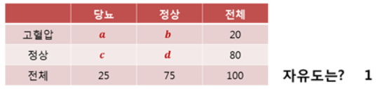
- Ex2) 3 by 2 분할표 6개의 값중 2개의 값만 정해지면 나머지 값을 모두 채울 수 있음 자유도 2
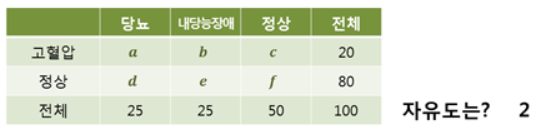
1.5 분포와 검정통계량
어떤 집단에서 개개의 관측값들을 측정하거나 동일한 현상에 대해 반복적으로 관측된 결과들을 집합적으로 살펴보면 특징적인 분포를 이루는 경향이 있음
이러한 관측결과들의 집합적 양상 \(\rightarrow\) 확률분포(probability distribution) or 분포(distribution)
정규분포(nornal distribution)
- 평균을 중심으로 대칭이며, 산술평균, 중앙값, 최빈값이 모두 동일
- 확률변수 X가 정규분포를 따를 때, ‘X~N(μ, σ2)’ 로 표현 (μ: 평균, σ: 표준편차)
- 기대값 E(X) = μ, 분산 Var(X) = σ2
- 통계적 분석에서 가장 흔히 사용되는 확률분포임
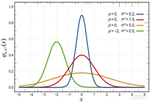
표준정규분포(standard normal distribution)
- 관측치(X)를 \(Z=\frac{(X-\mu)}{\sigma}\) 로 치환한다면 평균이 0이고, 표준편차가 1인 정규분포로 치환됨 (표준화)
- 이 정규분포가 표준정규분포, 혹은 Z-분포 (Z~N(0,1))
- 어떤 집단이 정규분포를 따른다고 가정하고 그 평균을 비교하는 것이 Z-검정
- 표준정규분포를 따를 때, ’Φ(z)’로 표현
- 평균과 표준편차가 다른 두 분포들을 비교하거나, 한 분포에서의 확률 등을 계산하기 위해 사용
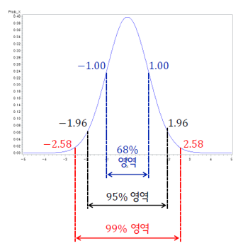
t-분포(t-distribution)
일반적으로 표본수(n)가 충분히 클 때, 표본평균들의 분포는 정규분포를 보인다고 알려져 있지만, 표본수가 충분치 않을 때에는 t-분포를 더 근사적으로 따른다고 알려짐
좌우대칭의 종 모양으로 정규분포보다 더 긴 꼬리를 가진 형태로 넓게 퍼져있음
자유도가 증가함에 따라 정규분포에 근접하게 됨
대부분의 경우, 모집단의 값을 모르고 표본집단의 값만을 알게 되는데, 모집단의 표준편차(σ) 대신에 표본의 표준편차(s)를 사용하게 되고 이때 표본 평균의 분포가 t-분포를 이룬다는 가정하에 분석
t-분포를 이용하여 독립인 두 군의 평균을 비교하는 방법이 독립표본 t 검정 (Student’s t test)
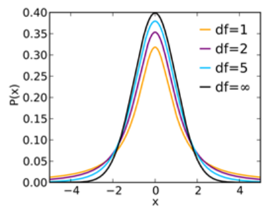
카이제곱(\(\chi^2\)) 분포(chi-squared distribution)
표준정규분포를 따르는 독립적인 확률변수를 제곱 (\(\frac{(X-\mu)^2}{\sigma^2}\) )하여 합해서 얻어지는 분포
좌우대칭 종형이 아님
자유도가 커짐에 따라 오른쪽으로 길게 늘어진 모양이 점차 좌우대칭 모양에 가까워짐
카이제곱 분포를 이용하여 두 집단 간의 비율을 비교하는데 사용되는 검정이 카이제곱 검정
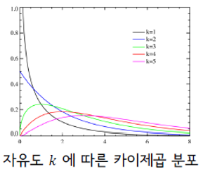
F-분포(F-distribution)
비율에 의해 정의되는 분포로 왼쪽으로 치우친 형태
2개의 모집단 각각의 분산 추정치의 비로 정의됨
분포는 분자와 분모 각각 자유도에 따라 형태가 결정됨
F-분포는 분산분석(analysis of variance, ANOVA)에 흔히 사용되며 선형회귀분석의 적합성을 판정하는 데에도 이용
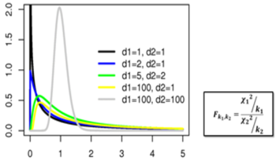
가설검정 시에는 관찰된 표본으로부터 가설검정을 위한 검정통계량(test statistic)을 계산
귀무가설이 옳다는 전제하에, 가정된 분포에서 관찰된 표본이 발견될 수 있는 확률(p-value)는 곡선의 아래면적을 통해 알 수 있음
계산된 검정통계량 \(\chi^2\)값이 8.33일때, 자유도가 1인 카이제곱 분포에서 \(\chi^2=8.33\)인 현상이 관찰될 확률(p-value)는 0.004
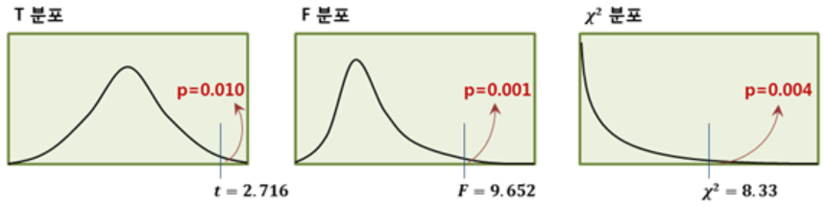
1.6 중심극한정리
중심극한정리(central limit theorem)
모집단의 분포와 상관 없이, 모집단으로부터 추출된 표본의 크기가 충분히 크다면, 표본 변수들의 합 또는 평균들이 이루는 분포는 정규분포에 근접한다는 정리
표본크기가 충분히 클 때, 산출된 표본통계량이 모집단에서의 모수와 동일하다는 것이 아니라 표본크기가 커지면 표본통계량들이 이루는 분포가 모집단에서의 모수와 가까워진다는 의미
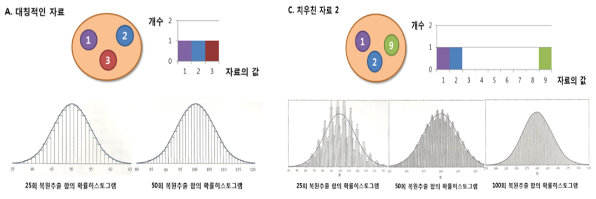
두 집단의 측정치가 정규분포를 띈다고 가정할 수 있다면 평균을 비교함으로써 차이를 쉽게 비교가능
많은 모형들은 자료의 분포가 정규분포라는 가정하에 작동하는 경우가 많으므로, 자료가 정규성을 갖는지 판단하는 것은 매우 중요한 작업임
모집단의 분포를 알지 못하는 경우에도 표본수가 충분히 크다면 중심극한정리에 의해 표본평균의 분포는 정규성을 띈다고 가정할 수 있으므로, 이러한 정규성 가정을 통해 다양한 확률분포를 통계검정에 이용할 수 있음
1.7 모수적 방법과 비모수적 방법
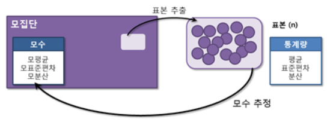
모집단: 궁극적으로 알고 싶은 전체 집단
표본: 모집단에서 추출한 모집단의 일부
적절한 표본집단을 지정하여 표본집단에서 평균, 표준편차와 같은 통계량을 구한 뒤, 이를 통해 모평균과 모표준편차를 추정하는 개념
통계량(statistics): 추출된 표본의 평균, 표준편차, 분산 등을 말함. 표본으로부터 계산된 검정통계량도 통계량의 일종임
모수(parameter): 모집단의 모평균, 모표준편차, 모분산 등
중심극한정리에 의해 표본의 크기가 충분히 크다면 모집단의 정규성 유무와 관계 없이 모평균에 대한 가설검정을 시행할 수 있음
이렇게 정규성을 갖는다는 모수적 특성을 이용하는 통계적 방법이 모수적 방법(parametric method)
중심극한 정리에 의해 표본평균이 정규분포를 따른다고 가정할 수 있는 최소한의 표본의 크기는 모집단의 분포에 따라 차이가 있음. 일반적으로 군당 30명 이상으로 구성된 표본의 경우, 표본평균이 정규분포를 따른다고 가정 가능
표본의 크기가 군당 10~30명인 경우에는 따로 정규성 검정을 통해 정규분포임을 확인한 다음 모수적 방법을 사용할 수 있음
정규성 검정에서 정규분포를 따르지 않는다고 증명되거나, 군당 10명 미만의 소규모 실험에서는 정규분포임을 가정할 수 없으므로 모수적 방법을 사용할 수 없음
이런 경우, 자료를 크기 순으로 배열하여 순위를 매긴 다음 순위의 합을 통해 차이를 비교하는 순위합검정을 적용할 수 있음
이렇게 모집단이 특정 분포를 따른다고 가정하지 않는 방법을 비모수적 방법(nonparametric method)라고 함
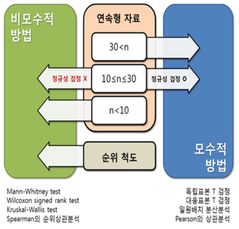
1.8 자료의 탐색 및 정규성 검정
통계 분석에 앞서 어떤 분포를 가지고 있는지, 치우침이나 특이점은 없는지 확인하는 것이 필요
탐색적 자료분석: 자료의 특징과 내재하는 구조적 관계를 알아내기 위해 시행하는 모든 방법
대표값(representative value): 자료를 대표할 수 있는 하나의 값. ex)평균, 중앙값
평균(mean): 모든 관측 값들을 합하고 이를 관측 수로 나누어 구한 값
중앙값(중위수, median): 관측 값들을 크기 순으로 배열하였을 때 한가운데 있는 수를 말함. 특이점(outlier)의 영향이 제한적이어서 탐색적 자료분석에서 더 선호됨
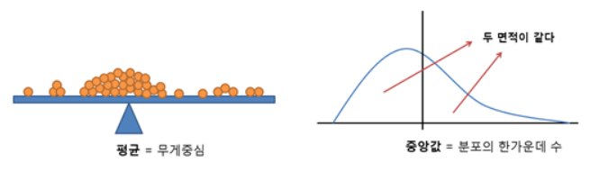
산포도(degree of scattering): 자료의 흩어진 정도 ex) 분산, 표준편차, 범위, 사분위수 범위
분산(variance): 개별 관측치와 평균의 차이의 제곱의 평균
표준편차(standard deviation): 분산에 제곱근을 취하여 원래 측정값들과 차수를 맞추어 준 것. 즉, 개별 관측치와 평균의 차이의 제곱의 평균의 제곱근
범위(range): 자료의 가장 큰 값과 가장 작은 값 간의 차이
사분위수(quartiles): 자료를 4등분 한 값
사분위수 범위(interquartile range; IQR): 3사분위수와 1사분위수의 차이. 분포의 퍼진 정도를 표현
다섯수치요약(five number summary): 최소값, 1수분위수, 중앙값, 3사분위수, 최대값

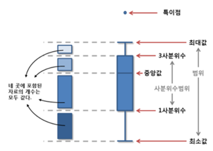
- 왜도(skewness): 자료의 치우친 정도
- 음의 왜도(negative skewness)(S<0): 오른쪽으로 치우친 분포
- 양의 왜도(positive skewness)(S>0): 왼쪽으로 치우친 분포
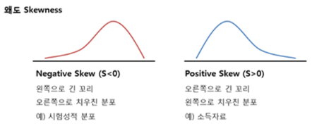
- 첨도(kurtosis): 자료의 뾰족한 정도
- 음의 첨도(negative kurtosis)(K<0): 납작한 분포
- 양의 첨도(positive kurtosis)(K>0): 뾰족한 분포

- 정규분포의 왜도와 첨도는 ‘0’
- 일반적으로 왜도와 첨도가 각각 -2 ~ +2 사이가 되면 어느정도 대칭성을 만족하고 뾰족함의 정도도 크게 벗어나지 않는 것으로 간주함
정규성 검정
많은 통계적 방법들은 자료가 정규분포임을 가정하고 작동하므로 자료가 정규성을 만족하는지 확인하는 것은 매우 중요
자료의 분포 형태 파악, 평균과 중앙값의 차이가 얼마나 나는지 확인, 왜도와 첨도 확인 등 진행
정규성 검정을 위해 흔히 사용되는 검정 방법은 Kolmogorov-Smirnov test 와 Shapiro-Wilk test
귀무가설: 자료는 정규분포를 따른다
대립가설: 자료는 정규분포를 따르지 않는다
정규성 검정에서 p value가 0.05 이상일 때 귀무가설이 채택되어 정규분포를 따른다고 간주함 (귀무가설을 기각하지 못하는 것이 꼭 귀무가설이 옳음을 의미하는 것은 아니므로 ’정규분포를 따르지 않는다고 말할 충분한 근거가 없다＇라고 해석)